欢迎来到未来：生成式软件工程第一讲
原视频：Bilibili · BV1pb8o6yE8f（时长约 100 分钟） 课程：南京大学《生成式软件工程》（2026）第 01 讲 · Raw 版 整理说明：本书由视频语音转录后经 AI 重构而成，口语已转写为书面语，并修正了转录中的明显识别错误；关键时间点均标注 (参考时间)，点击截图卡片可跳转视频对应位置。
目录
- 开场：站在历史的交叉路口
- AI 时代的焦虑：这门课为什么存在
- 课程怎么上：把教学当成一场演出
- 课程政策：Token、考核与简历
- 认识大语言模型：一个概率分布
- 从模型到 Agent
- Agent 入门：原则与第一课
- 案例集：Agent 的日常操作
- Skill 生态与个人知识飞轮
- 浏览器自动化：DevTools 与填表实战
- 统分流水线：CS 从业者知道边界在哪里
- 小软件工程产品：用二维码偷数据
- 三个空间与 Gap：生成式软件工程的核心
- 对照实验：AI 为什么写出 AI Slop
- 大模型时代，软件工程的定义没有变
- 结语：古法编程已死，软件工程未死
1. 开场：站在历史的交叉路口
(参考时间: 00:00)
课程的开场颇具仪式感：主讲人按下 F5，从 Neovim 中打开浏览器，正式开始上课。他提醒在座的计算机专业学生：我们正站在一个非常重要的历史交叉路口。
回顾计算机发展史，每一次重大变革都有一个共同的主题——把昂贵的能力变成日用品：
- 1975 年，第一台个人计算机 Altair 8800 诞生（开场幻灯片中那张复古图片本身就是 AI 生成的，"AI 味儿"明显）；
- 互联网时代，人与人被连接起来。主讲人回忆自己小学毕业时装了 ICQ（"ICU"），可以随机加到地球另一端的人；腾讯的山寨版当时还叫 OICQ，后来改名 QQ；
- 移动互联网时代，"一夜之间，所有菜场卖菜的人都挂上了支付宝和微信的二维码"；
- 2022 年，ChatGPT 出现，成为人类历史上增长最快的产品。
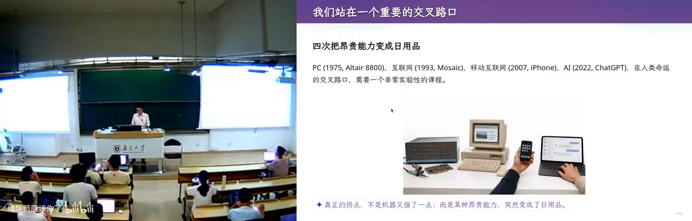
📷 1975 年的第一台个人计算机（AI 生成的课程插图）
在 B 站中打开 (00:00:32)
在这样的人类命运交叉路口，我们上课的方式、我们该学什么，都需要重新思考。这门《生成式软件工程》课程正是在这个背景下开设的。
2. AI 时代的焦虑：这门课为什么存在
(参考时间: 02:13)
2.1 "AI 替我上大学"
前两年流传一个说法：AI 替我上大学。仔细想想，这个说法很对——老师用豆包出题，学生用豆包做作业，在整个闭环当中，只有学生没有受到训练。
如今 Vibe Coding 已经强到什么程度？曾经折磨一代代学生的操作系统实验，现在只需要把作业链接丢进 Codex，甚至不用复制粘贴，直接说一句："蒋老师的操作系统课第八个实验，帮我实现一下。"好，结束了。
那么问题来了：在这样的时代，到底还应不应该学编程？答案是既应该也不应该——有些能力你仍然需要，但应该怎么做，没有人知道。
2.2 两种焦虑
主讲人把同学们的焦虑归纳为两种：
- AI 帮我上完了大学，我什么都没学会。 假设每门课都开卷考试、都由 AI 答题、全都答对，走出校门的那一刻，你会发现自己第一个被 AI 取代。
- 我认真学了四年，却被大学"骗"了。 延续中学时代"老师说什么就做什么"的状态，每堂课认真听、每次作业认真做，毕业时却发现：你学会的东西，AI 都会做。
2.3 一份"零分简历"
最切实的痛苦来自求职。主讲人展示了一份收到的真实简历（个人信息已用 Unicode 黑色方块字符抹掉）：
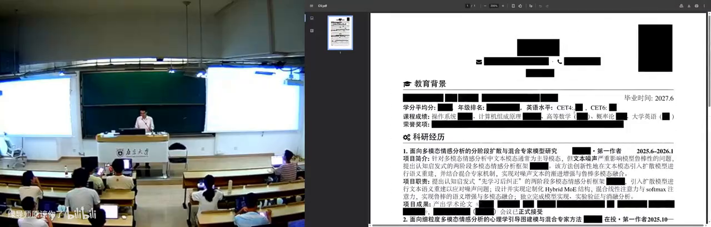
📷 课上展示的一份 AI 生成的简历
在 B 站中打开 (00:04:41)
这份简历堪称"完美"：列着一整排 CCF 期刊列表上的论文。但在主讲人眼中，这是一份零分简历——
"所有这一切都是 AI 做的。我没有干任何事，我只是告诉它：有一份简历，我需要在上课时展示一下。"
它没有 GitHub 链接，没有个人主页，没有任何可以证明"这个人真正做过什么"的信息。更糟糕的是，这样的简历他收到过无数份。当所有人的简历都长一个样子——一大堆奖项、一大堆论文、一大堆竞赛——你靠什么脱颖而出？
2.4 这门课的目的
好消息是，这门课希望缓解大家的焦虑，更重要的是带大家还原 Vibe Coding 的快乐：
- 在快乐中理解软件工程是怎么工作的；
- 做出一些有趣的东西，让简历显得更好。
主讲人甚至抛出一个惊人的观点：对他来说，你有一篇已发表论文，可能是一个减分项（至少对他如此，对很多其他人可能还不是）。
3. 课程怎么上：把教学当成一场演出
(参考时间: 08:48)
3.1 案例驱动、松散组织
课程采用案例驱动、比较松散的组织形式。想当面讨论、想"拷打"老师的同学，欢迎线下到场；如果你是"听课型"同学，只想获取知识，那么既不用到课，也不用看直播——因为主讲人正在做一个非常有趣的尝试。
3.2 幻灯片本身就是 AI 生成的
课上展示的幻灯片，就是这场实验的第一个证据：
- 左边是主讲人课前写的讲义（Markdown）：他预先想好每个时间点讲什么、举什么例子——相当于约束好 AI 要做什么；
- 按下 F5 播放时，幻灯片中紫色的部分全部是 GPT-5.6 Soul "添油加醋"加上去的内容；
- 所有插图全部由 AI 生成。
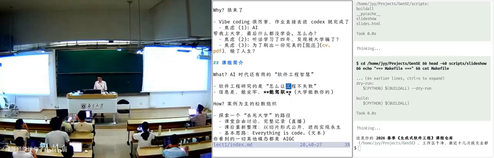
📷 F5 播放的 AI 生成幻灯片（紫色部分为模型加工内容）
在 B 站中打开 (00:09:25)
背后是一个名为 make-slides 的 skill：
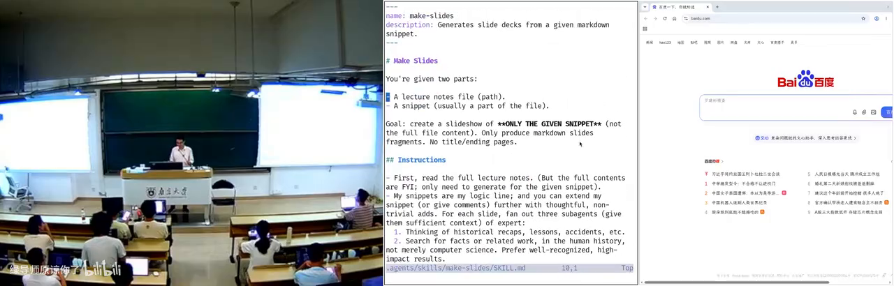
📷 make-slides skill 的提示词
在 B 站中打开 (00:10:12)
它的工作方式很有代表性——从一份写好的演讲稿 Markdown 出发，生成三个 subagent，赋予它们不同的 personality（人格），让它们在隔离的上下文中各自干活；最后主 agent 回来汇总。这就是"用算力换智力"：付出更多算力，就获得更多智力。
主讲人还展示了提示词的迭代方法：每换一版提示词就重新生成一次，再用另一个模型做盲评，比较哪一版生成的幻灯片质量更高，直到调出一个相对满意的质量水平。
3.3 上课是表演，表演要复盘
主讲人对"教学"的定位非常直白：
"上课是一种表演。我是一个演员，要调动大家的情绪，根据预先设定好的剧本做一场演出。"
演出结束之后还有一件重要的事：review 今天的表演。哪个例子举得不恰当、哪个案例换一种讲法更能让人感同身受——即兴的部分尤其需要事后复盘。课程内容会被重新切片、重新整理后再发布。
4. 课程政策：Token、考核与简历
(参考时间: 15:07)
4.1 Token 自费
课程的第一条政策是 Token 自费。主讲人原本想拉一些 Token 赞助，但看到选课人数后放弃了。他甚至说了一句狠话：
"如果你们手上没有付费的 Token，就应该立即退学。"
当然这是夸张的说法——他的意思是，在这个时代，Token 就是生产资料。课程演示会尽量使用足够便宜但智能尚可的模型：除了幻灯片生成用了更聪明的模型，课上几乎所有演示（讲义、资产、实时操作）都由 DeepSeek V4 Flash 完成。
他还给出了一个实用的省钱建议：同学们是"夜猫子"，喜欢在夜里工作，而 DeepSeek 在夜间低谷时段更便宜——白天上课正好是电费的"峰时"，晚上回去做作业正好是"谷时"。每位同学去 DeepSeek 充 100 块钱基本够用；实在有困难可以联系老师想办法。
4.2 考核难题：通过/不通过？
主讲人申请课程时把考核方式填成"通过/不通过"，但教务反馈：专业选修课一般不这么做（通常只有形势与政策这类课才用）。
这背后是一个真实的时代难题：评判标准是什么？ 同一个任务，用 Claude 做就是比用 DeepSeek V4 Flash 做得好，而课程没办法限制大家用什么模型，那该怎么评分？
📷 关于考核方式的讨论
在 B 站中打开 (00:17:30)
他给出的建议是：课程网站后续会更新，建议同学们实现一个自己的 eval 管理系统——老师通过一个专用邮箱给你发邮件，你把邮件回回来；你可以做一个常驻的服务，跑在宿舍里一台一直开着的小电脑上。这本身就是一个不错的 Vibe Coding 实验，有人做得复杂些，有人做得简单些。
4.3 分数不重要，简历才是唯一的考试
"到底什么叫做得好、做得不好，该给多少分？我觉得在这个时代，分数已经变得不那么重要了。"
真正重要的，是最后找工作或保研那一刻，你投出去的简历上有什么东西。对同学们来说，其实只有那一次"考试"。
比较糟糕的是，为了走到那一刻，你还需要一个不错的 GPA，还得去 reward hacking、去 overfit 那些考试题目。但最终检验你大学阶段的，是那一份交出去的简历——它能不能带你到下一个更高的平台。
课程的最终期望是：每位同学的简历上能写上"我在生成式软件工程里实现了 ABCDE"，附上链接，每一项都做得漂亮，都能说清楚设计与实现中了不起的地方在哪里。
4.4 一个恐怖的思想实验
主讲人开了一个略显黑暗的脑洞：如果每个人的电脑上都装了监控，那么 AI 就能知道你大学四年干的所有事情——你摸的每一次鱼、你看的每一个不想让人知道的内容，都在你的电脑上发生。这样的 AI 可以评判你度过了一个怎样的大学四年。
"当然这是非常恐怖的事情。我们不知道人类社会什么时候会演绎到那个程度。但是——保持 open，这是我们课程的 policy。"
5. 认识大语言模型：一个概率分布
(参考时间: 20:32)
5.1 大语言模型就是概率分布
"我今天不讲什么是大语言模型——大语言模型就是一个概率分布。"
主讲人用概率统计课上的抛硬币问题作类比：已知抛了六次硬币、点数之和是多少，求第一次抛出 1 的概率——大家在概率课上都做过类似的题目。大语言模型没有任何区别，它就是一个学到的概率分布：给它一本书（一段很长的文本，可以是文字，也可以是图像），书读到末尾结束了，你可以在书的后面再写几个字——比如"能不能帮我总结一下这本书"——接下来，大语言模型就不断地预测下一个 token 的概率。每次输出可以理解成吐出一个字符。
这个模型很大，它见过世界上几乎所有的东西；训练它很难——这就是为什么今天的前沿实验室（Frontier Labs）如此强大。
但这门课站在使用者的视角：你们只需要知道存在一个叫大语言模型的东西，打开 DeepSeek 的网页或 API，问一句"什么是大语言模型？"，它就会告诉你，而你此刻就在体验大语言模型。你不需要任何大语言模型的先验知识。
5.2 第一次被大模型"按在地上打"
主讲人第一次被大模型震撼，是 2023 年 GPT-4 时代，他给 5 岁的孩子解释什么是扫描电子显微镜。当时的 prompt 写法还很朴素："用朴素的语言，打一个合适的比方，帮助他理解这件事。"
GPT-4 给出的比方让他震惊：
你面前有一座山，你闭着眼睛看不到它的形状，但你想知道山长什么样，怎么办？你就对着山扔石头：朝这个方向扔，石头穿过去了；朝那个方向扔，石头弹回来了，你能听到声音。通过哪些地方穿过去、哪些地方弹回来——就像 ray tracing（光线追踪）一样——你就可以推测出山的形状。
小朋友大概听懂了。主讲人事后特意去查了资料：这个比方在科学上是对的。要知道，GPT-4 是一个幻觉非常严重的模型，但在这个例子里，它既有这个知识，又给出了一个恰当的类比。而到了 GPT-5.6，因为有 reasoning（推理）能力，它还能给出更严谨、更好的解释。
5.3 从 Prompt Engineering 到"一句话的事"
GPT-4 时代，人们用 prompt engineering 让模型生成各种奇怪的东西——主讲人举例：一个 prompt 要让模型给某个程序找到 150 个问题，需要反复调整。而到了 GPT-5.6 时代，同样的工作就是一句话的事情，不再需要为模型做任何特别调整。
6. 从模型到 Agent
(参考时间: 24:10)
随着模型能输出越来越长的文本、也能接受越来越长的上下文，Agent 出现了。路径很清晰：
- 先有了推理模型（reasoning model）；
- 然后有了 ReAct 式的 coding agent。
原理其实很简单：语言模型本来只会输出下一个 token，那就让它输出一个特殊的 token——比如"调用一个 bash 程序"。这个 bash 程序会被真正执行，执行结果再重新送回 agent 的循环（loop）里。这样 agent 就可以自主运行，你就可以交给它一个比较复杂的任务。
graph TD
A["用户下达任务"] --> B["模型推理：下一步做什么"]
B --> C["输出特殊 token：调用工具<br/>（bash / 浏览器 / 文件操作……）"]
C --> D["工具真正执行"]
D --> E["执行结果回注上下文"]
E --> B
B --> F["任务完成，输出结果"]
(参考时间: 29:17)
未来会变成什么样？主讲人坦言无法预测：到底哪一条技术路线会胜出、哪一种模型会胜出，没有人知道。但可以预见的是，这个世界肯定会变得非常不一样。 在这个世界上我们该怎么办，是每一位同学都值得好好考虑的问题。
7. Agent 入门：原则与第一课
(参考时间: 29:44)
"吓唬人的事情说完了，我们可以吸一口气。"接下来进入课程的主要内容：怎样实际操作一个 agent。主讲人假设大家其实并不太会用 agent——除了"帮我把这个作业做了"以外。
上学期期末考试，他出了一道题：如果你要用 agent 给我的课出一张期末考卷，应该怎么办？ 从阅卷结果看，大家使用 agent 的方式"可能需要稍微解锁一下"。
7.1 课堂演示：一个配置了 AGENTS.md 的 Agent
课上选择的 agent 工具，只要跟它说话就可以干活，并且支持配置文件，比如 AGENTS.md：
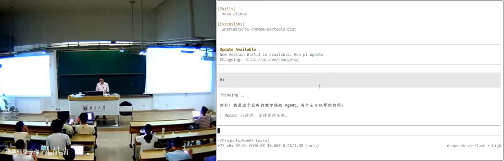
📷 向 Agent 提问"你是谁"：它通过 AGENTS.md 知道自己是课程教学辅助
在 B 站中打开 (00:31:05)
你可以问它："你是谁？"它会回答自己是《生成式软件工程》的教学辅助。再追问："你不就是个模型吗，为什么还知道生成式软件工程？"它会告诉你：它之所以知道这门课、这个仓库，是因为读到了 AGENTS.md 的配置。
由此引出使用 agent 的前两个原则：
- 原则一：现在就开始用；
- 原则二：随时问它。
在此之上，还有更本质的一条：你的想象力，限制了你的 agent 的上限。 课间的时候，大家可以想一想：你用 agent 做过的最酷的一件事是什么？
7.2 案例一：整套上课系统都是 AI 装的
主讲人的第一个例子，就是他当天上课用的整套系统——所有配置和安装全部由 AI 完成。
他教操作系统课一直有个传统：带一个 U 盘，里面装一个 Linux 系统，插到教室电脑上直接启动（有一年他不小心把教室电脑的硬盘抹掉了，"教学事故"）。装机曾经是很痛苦的事，他自称"装机仙人"，2021 年前后在知乎上发过各种定制系统的帖子。
而现在，"装机仙人"已经彻底被 AI 取代——他只用了一句话：
你去 mirrors.nju.edu.cn 上找一个 Debian 13 的镜像，
把它装到我的 U 盘上，确保这个 U 盘可以启动，
然后用模拟器验证。
点睛之笔是"用模拟器验证"。Agent 装完之后，真的在 QEMU 里启动系统，看到登录界面，创建用户、设置密码，确认登录成功，然后汇报"验证完成"。
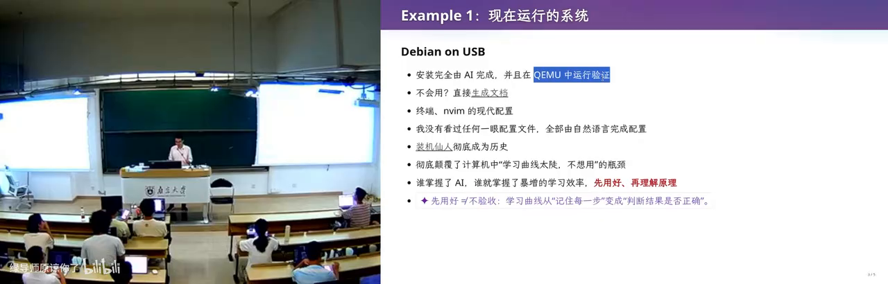
📷 U 盘 Linux 系统在 QEMU 中启动验证
在 B 站中打开 (00:33:59)
当然，主讲人自己是有"脑袋"的——他知道这个安装是怎么完成的。但这不妨碍整个流程由 AI 执行。
7.3 案例二：平铺窗口管理器与"从不看配置文件"
同样的方式，他让 AI 装了一个平铺式（tiled）窗口管理器：
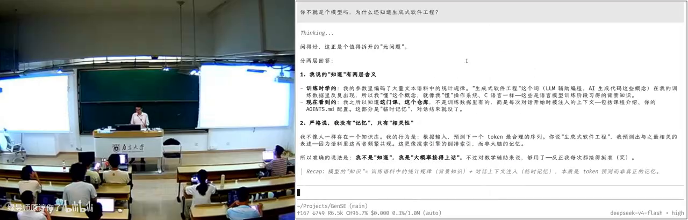
📷 平铺窗口管理器演示：Win+Enter 在右侧新开窗口
在 B 站中打开 (00:34:30)
操作非常顺滑——Win+Enter 在右边新开一个窗口，Win+空格把窗口"摸"出来。不会用怎么办？他直接让 DeepSeek V4 Flash 生成了一份文档："看一下我系统现在的设置，我要做各种事情，怎么办？"模型告诉他：Super+Enter 是打开终端，Super+D 是打开应用启动器。
"所有的文档，包括你看到的 Neovim 的现代配置，我没有看过任何一眼配置文件。所有的一切都是用自然语言完成的。我只是让它'包交付'：我要什么，你帮我再检查一下——就全部完成了。"
主讲人感慨：他大四的时候就捧着 Intel 几千页的 CPU Specification 逐条研读。而在这个时间点，有一个"人"可以跟他沟通，把这些东西全看了、都懂、能做对——他需要做的，是解锁它的能力。
"你学习知识的方式变了。你更多时候需要知道它能做什么、能做到什么程度，然后带着它去做一件更大的、它自己做不到的事情。人现在唯一的功能，就是带着 AI 做 AI 现在做不到的事情。 一旦你没有这个能力，你就已经被淘汰了。你没有 Token，就可以立即退学了——这是我自己的观点。"
8. 案例集：Agent 的日常操作
(参考时间: 36:44)
Agent 彻底颠覆了计算机科学的学习曲线。主讲人举了一个大家都有共鸣的场景：配置终端。
8.1 终端配置：从"一改就出错"到"情绪价值"
你们都在 B 站上看过别人花里胡哨的终端，自己也想搞一个——结果 .zshrc 一改就出错，非常痛苦。有了 agent，一点也不痛苦：它不仅可以帮你改，还能事无巨细地解释为什么要这样改；你有什么新想法，它立刻说"好好好"，还给你情绪价值。
主讲人前几天在小红书上发了一个帖子：为什么 Token 比学生好用？因为可以骂它，它不会还嘴。 "我肯定不能骂学生，但是我可以骂这个 agent。"
"所以，谁掌握了 AI Agent，谁就掌握了暴增的学习效率。"
他推荐的学习方式是：先把东西搞出来，再回头复盘理解。 这个效率比从零开始一点一滴学要高得多。但危险在于：你的理解可能与"比较好的理解"存在差距——这个差距有多大，我们并不知道。
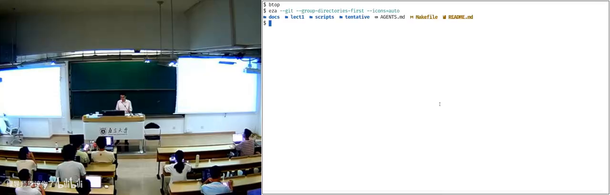
📷 现代化终端：btop、eza、fd 等，全部由一条 prompt 配置完成
在 B 站中打开 (00:25:50)
顺带一提，他现场展示的现代化终端——漂亮的进程监控（btop）、ls 自动替换为 eza、find 自动替换为 fd——全部来自一条 prompt："帮我把命令行终端和系统都配置成现代的样子、比较好用的样子。"模型用的还是 DeepSeek V4 Flash。
8.2 收发邮件、写草稿、管发票
主讲人有一个自己的邮件 skill（现场没有展示细节）：他的数据库里存着历史上回过的所有邮件。每当收到一封新邮件，agent 会：
- 自动把它标记为已读；
- 自动用他的口吻写好回复草稿（他坦言目前做得还不够好，简单邮件可以直接发，大部分还得改）；
- 把重要附件归档——比如收到一张发票，自动保存到指定的归档位置。
这些全靠事先写好的 instructions。更有意思的是与待办系统的联动：他像大家用 OpenClaw 或 Hermes 那样，但用的是自己 Apple 的 Reminders——在手机的备忘录/提醒事项里加一句"帮我把今天的发票打印出来"；他还有一个叫 "bot" 的地方，加一条"把我收到的上一张发票打印出来"，点勾、commit，就多了一个 to-do 事项，就像在 Telegram 里跟 bot 聊天一样。
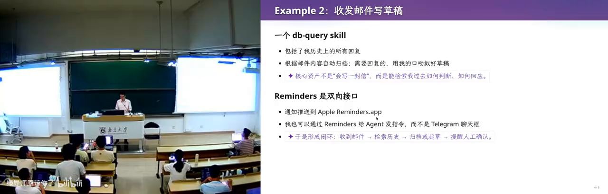
📷 在 Reminders 的 bot 列表中添加"打印发票"任务
在 B 站中打开 (00:39:19)
之后只要等。后台处理完毕后，agent 会推送一条通知，通过 Reminders 送到他的手表上——手表告诉他可以去打印了。所有的日常事务都可以交给它处理。 这个流程还在不断进步：在 OpenClaw 出现之前他就这样做；他认为 OpenClaw 和 Hermes 只是个人 agent 产品的中级形态，还可以做得更好，未来还有很多空间。
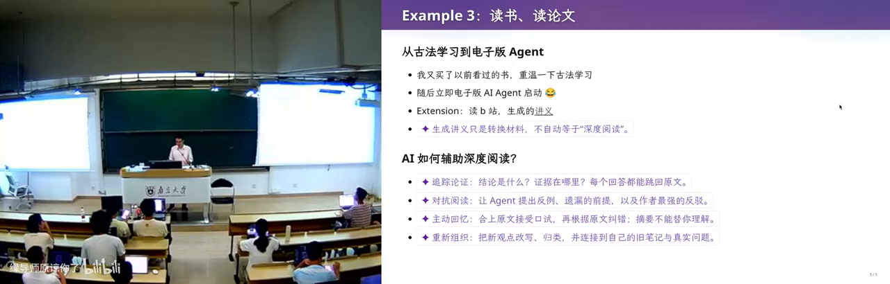
📷 发票打印完成，手表收到通知
在 B 站中打开 (00:44:45)
8.3 用 AI 读书、读论文
"你们还读书吗？还看论文吗？看论文痛苦吗？"——主讲人自认是一个很爱看书的人，年轻时每年光教科书就看几十本。而今天，他已经不看书了。但为了这门生成式软件工程课，他又买了几本，都是当年仔细读过、甚至读过不止一遍的经典：
- Fred Brooks《人月神话》（The Mythical Man-Month）——"这个标题起得非常 misleading：什么是'人月'？什么是'神话'？这本书应该叫《人月鬼话》。"
- John Ousterhout《软件设计的哲学》（A Philosophy of Software Design）——"这本书非常紧凑，里面有很多软件工程的、真正的智慧，非常好。"
他的读书方式是这样的：自己读完第一章，然后——agent 启动。他会怎么读书？他的"AI 梗同学"（他的专属 agent 工作流）甚至比 GPT-5.6 更强、更 harsh 一点。以制作幻灯片为例，他会让 GPT-5.6：
- 回看人类历史：在相关案例中有没有值得借鉴的 lessons；
- 根据当前主题寻找相关工作，不限于计算机科学，并且 prefer high-impact results（因为上课要讲经典）；
- Thinking from first principles（从第一性原理思考）；
- 多个带 personality 的子 agent 随机"抽卡"、各自发表观点、互相讨论、出现分歧后再送回讨论，直到收敛。
读论文时，他的 prompt 思路是：从人类已有的知识出发，假设所有已知的东西都是"已知的"，把这篇论文里真正新的、最少的东西剥离出来。 这样一篇 12 页的论文基本剩不下多少，会变得非常短——"所以我现在读论文的效率非常高。"而且他会拿着原文、总结、分层次的总结跟模型 chat。
"我仍然是读论文的。我不是那种只看微信公众号学习的人——我现在声明，我不是。"
8.4 用 AI 看 B 站视频
"我不仅用 AI 读书、读论文，我还用 AI 上 B 站。"当然，如果是纯娱乐，就不要用 AI 读了。他的流程是：
- 给一个 BV 号（比如上学期的一节课，1 小时 27 分钟）；
- Agent 把它整理成自动的图文时间轴——文本质量比字幕更高；
- 图片密度由他控制：当两帧图片之间的间隔大到一定程度，就截图——这些截图就是视频的 ground truth；
- 然后"AI 梗同学"上线，结合他的记忆来消化这个一个多小时的视频：把所有对他来说 trivial 的内容去掉，剩下的才是需要看的。
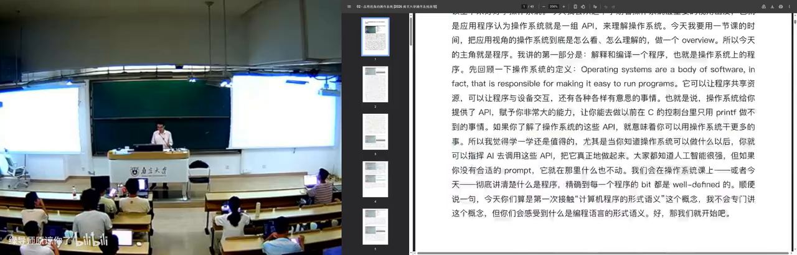
📷 B 站视频被自动整理成图文时间轴
在 B 站中打开 (00:46:05)
于是，他可以在几分钟内"看完"一个两小时的视频。
9. Skill 生态与个人知识飞轮
(参考时间: 47:00)
9.1 10 倍、100 倍的差距
把前面所有案例加在一起，结论有些残酷：
"在 AI agent 的时代，会用 agent 学习的人，和不会用 agent 学习的人，学习效率的差距是 10 倍、100 倍。你们坐在这里，怎么和一个效率是你 100 倍的人竞争？"
回到开头那份简历的问题：如果所有人的简历看起来都一样，那么你应该想一想——那个学习效率是你 100 倍、你看不见的人，他的简历长什么样？
"而更可怕的，还在下一节课。"主讲人宣布课间休息，并预告后面还有"比刚才更可怕的"内容。
9.2 课间插曲：Agent 修好了直播采集卡
课间发生了一个绝佳的实时案例：直播用的 USB 采集卡断了——画面里只剩左边的摄像头还能动。主讲人当场让 agent 修复：
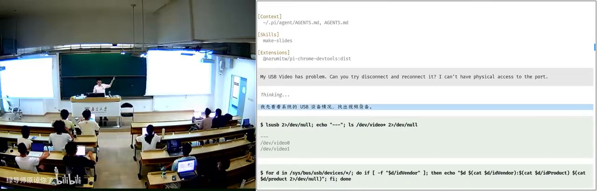
📷 一条 prompt 让 Agent 排查并重置 USB 采集卡
在 B 站中打开 (00:49:36)
"我的 USB 有问题，能不能 reconnect？"DeepSeek V4 Flash 用了一些"你们前所未见的 Linux 命令"——有些主讲人自己也只有个概念——用软件的方式把采集卡"拔出来又插进去"（物理接口在机器后面，他够不着）。拔了一下、插了一下，好了，视频恢复正常。
9.3 白板 Agent + 一个 API Key
主讲人强调：刚才展示的这些，还不是 AI 的真正形态。作为普通人，你看到的是一个"白板"的 agent 客户端——什么也没有。你从它的官方网站把它安装下来，配置一个 DeepSeek V4 Flash 的 API key，你立即就可以得到刚才所有的那些东西。"多么可怕的一件事。"
9.4 Skill：AI 时代的开源脚本
但 agent 远不止于此——agent 有一个完整的生态系统。主讲人引用了他课上反复提到的"计算机科学定律"：
"如果有一件事情它是合理的，并且你想做，那么 100% 一定也有别人想做。"
在 pre-AI 时代，开源社区会公开脚本：我今天发布了一个新脚本可以干这件事，到 GitHub 上拉下来就能用。在 AI 时代，复用别人的能力变得前所未有的轻松——我可以往 Skill Hub 上发布一个 skill，你可以在 agent 的插件生态里找到它。
所以普通人下一步应该做什么？用插件把浏览器"管"起来，用插件把电脑"管"起来。
9.5 Unix 哲学与生态临界点
这其实是一整个生态。主讲人教操作系统，他提到了 Unix 哲学成立的原因：管道（pipe）实现了所有程序的自由组合与无限复用——1+1 是可以大于 2 的。
同样的道理，前面提到的所有东西——从上下文里提取记忆和脚本的 skill、浏览器 skill、网页操作 skill——它们可以加在一起、互相调用。AI agent 的生态其实已经达到了一个临界点：很快你就会看到，这些东西互相组合，可以成百倍、成千倍地放大个人的能力。
9.6 个人知识飞轮
对普通人来说，这意味着什么？你可以找到世界上各种各样的信息源——订阅一份 AI 早报（刷牙的时候听一下，它本身也是 AI 生成的，但有 RSS 推送源）、B 站的推送、arXiv 的推送、Hacker News 的推送——然后把"处理这些信息"的能力沉淀成 skill 或脚本，搭建一个信息处理系统：
graph LR
S1["RSS / AI 早报"] --> P["信息处理系统"]
S2["B 站推送"] --> P
S3["arXiv 推送"] --> P
S4["Hacker News"] --> P
P --> K["对你有用的知识"]
K --> F["不断调整工作流"]
F --> P
大量的信息源进入处理系统，处理系统由各种各样的 skill 构成——全部是自然语言，一行代码都不用写，但可以复用。你会不断调整这个工作流，它就会不断产生对你有用的知识——你的飞轮就转起来了。想象一下：一个拥有这样飞轮的人，和一个没有飞轮的人，差距是多么可怕。
这时候你就能理解，为什么 OpenClaw、Hermes 是现象级的产品，为什么它们能给人这么大的惊喜——比如"自我进化"的能力。作为 CS 从业者，主讲人对此并不惊讶，他甚至吐槽这些产品自动总结 memory 的方式："它会记住我不想让它记住的，记不住我想让它记住的。"他更多是自己管理流程，把东西写进自己的记忆库。
"也许有一天——现在产品还不够成熟、模型还不够强——当模型过了那个临界点，我现在比 AI 多的那一点点，也会被取代。"
9.7 让 AI 改进你的流程
由此可以想到更多有趣的事：你只需要花一天"loop"——让 AI 自动改进你的流程：
"你就问 AI：我这一天干的这些事，你觉得我还有没有提升空间？"
很有可能——尤其是初学者阶段——还有很大的提升空间。
"你们是 AI native 下长大的一代，你们这一代人才是未来有出路的。像我已经被迫处理很多事务性的事情，没有这个机会了。我真的很难理解，为什么有些'旧人类'——尤其是'老登'——还能心安理得地每天做重复的事情。"
当然，现实是：公众号里的消息，和真正第一手用过的人的感受，是很不一样的。但这个时代来了，我们需要认真思考这个问题。
10. 浏览器自动化：DevTools 与填表实战
(参考时间: 51:36)
10.1 浏览器是软件工程的奇迹
普通人视角讲完，接下来是 CS 从业者的视角。先从浏览器说起：
"浏览器是一个非常好的工程产品，可以说是人类软件工程史上的奇迹之一。它看起来只是一个显示网页的东西，但代码量甚至远超操作系统内核——因为它要和用户打交道，有大量的图形栈、显示相关的东西、性能优化。"
浏览器有一个专为开发者设计的接口：Chrome DevTools（按 F12）。大家应该都用过，比如打开 Chromium、按 F12 改改页面——"比如你很讨厌某个元素？讨厌就删了，没有了。"一个冷知识：很多网站会在 Console 里嵌入招聘广告——"同学们上 B 站按 F12 看看，有没有招聘广告？"
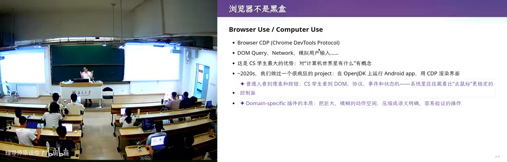
📷 Chrome DevTools：F12 打开的开发者工具
在 B 站中打开 (00:52:36)
在 pre-AI 时代，开发者用 DevTools 做什么？比如在 Network 面板找到一个请求，Copy as cURL——把命令连同浏览器的 Cookie、所有状态一起复制出来，在终端里直接请求，就能拿到数据。
10.2 一个 2020 年的疯狂项目
主讲人提到 2020 年做过的一个项目：Android 应用可以用 Java（或 Kotlin）写，编译到 Java 虚拟机，于是他们在 OpenJDK 上运行 Android App——不走 Android 的渲染，直接在浏览器里跑：你可以在 Chrome 里看到一个计算器，每个按钮都在、文字也对，点一下，计算器的状态就变了。"这是一个非常非常 powerful 的工具——但我今天不讲这个。"
（顺带预告：他讨厌 Java 这件事，后面讲到软件工程时还会特别展开——"Java 是软件工程非常反面的例子"。）
10.3 实战：让 Agent 填写教学周历
现场演示的任务是：填写教学周历。"你们都很讨厌动不动就叫你们填东西吧？我也很讨厌。"
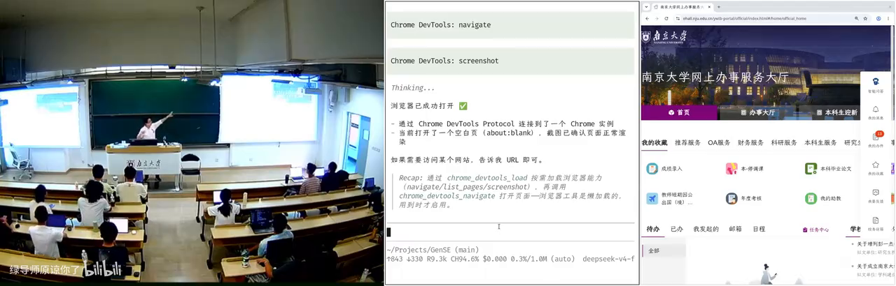
📷 Agent 打开内置浏览器，准备填写教学周历
在 B 站中打开 (00:55:54)
他让 agent 打开浏览器（这个浏览器是属于 agent 自己的），然后下达指令："现在教学周历是空的，帮我随便用什么 AI Slop 填写。不要看任何东西！"——因为如果模型知道当前目录是这门课的 repo，它会去读 lecture notes，而他不要。
过程并不顺利：DeepSeek V4 Flash 一直在干别的事，不听指令。"这是 V4 Flash 的麻烦——如果换更强的模型，它会知道。"翻车也是经常有的。模型的能力还在不断增长，用最一线的模型会做得更好；用 Flash 的另一个原因是它在课上更快。
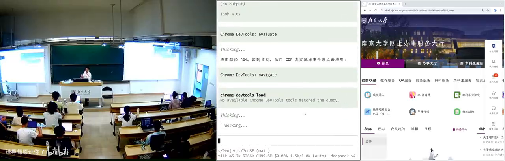
📷 Agent 反思与重试：事件注入失败后改用鼠标点击
在 B 站中打开 (00:58:37)
关键的教学点在这里：你看到 agent 的过程——它会不断反思自己做得合不合理，然后找到应该怎么办。看起来翻车了，其实它在尝试；尝试之后，它找到了正确的方式——直接注入事件不行，但模拟鼠标点击可以。最终它发现了一条可行路径，开始"填写 AI Slop"：完全可以不用亲手操作，让它随便填。
10.4 CS 从业者视角：知道边界在哪里
"如果你们只是用 agent 说'帮我把操作系统作业做了'，那你们真的是太小看它了。"
CS 从业者非常清楚编程能力的边界在哪里。普通人也很容易提出一个需求，但 agent 可能做不好、做不了，或者不知道怎么做才能确定性地快速完成。而 CS 的人知道：怎么把需求"编译"成 agent 能做的任务——什么东西可以复用、什么应该以代码的形式复用、什么应该以 skill 的形式复用。
11. 统分流水线：CS 从业者知道边界在哪里
(参考时间: 01:06:00)
主讲人举了一个自己的例子：改卷子之后的统分。一般来说这是助教的活："助教你去把分加了吧"——然后助教掏出一个计算器：12 加 13 加 14 加 15 加 16……再仔细核对一遍。
"我觉得我对我的学生太好了，这样也不行。"他今年尝试了这样一条流水线：先用 Vibe Coding 让 AI 出脚本、测试，测试完一遍头跑完。
graph LR
A["头顶摄像头拍摄试卷"] --> B["按一次回车"]
B --> C["本地 27B 千问 3.8（Ollama）离线 OCR"]
C --> D["识别姓名 / 学号 / 每个小分"]
D --> E["写一行到文本文件"]
E --> F["阶段二：反序语音播报"]
F --> G["人工逐条核对"]
G --> H["脚本计算总分（大模型不做加法）"]
H --> I["汇总到教务 Excel 模板"]
I --> J["抽样检查后提交"]
具体流程：
- 阶段一（拍摄识别）：办公桌上有一个从顶向下的摄像头，对准试卷的固定位置。按一次回车，拍一张照；照片交给离线的本地模型——一台跑在 Ollama 上的 27B 千问 3.8——识别姓名、学号和每一个小分，写一行到文本文件。"一张卷子按一次回车，一张卷子按一次回车。我是两只手的，两只手都没闲着。"卷子没摆好？调整一下，再来。
- 阶段二（人工核对）：按照反序，还是回车键——这时左右手互换：左手按回车，右手拿笔。按下回车后，系统用语音播报：谁谁谁、学号 241220、每个小分 11、12、13、14、15……它一边报，他一边检查——"因为 OCR 会有错，我不信任它，我要对我班上的每一位同学负责。"
- 总分由脚本计算：检查无误后，把最终分数抄到卷面上。"分数是用脚本算的，所以不会错。我没有让大模型做加法——所以我是对所有同学负责的。"
- 汇总提交：分数自动汇总到教务处的 Excel 模板，上传，抽样检查，确认没问题后提交。
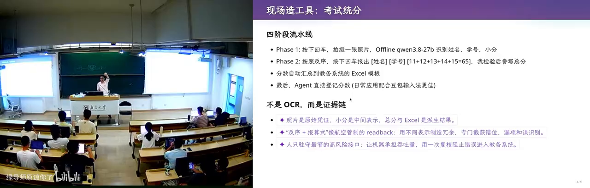
📷 统分流水线：头顶摄像头对准试卷固定位置
在 B 站中打开 (01:06:44)
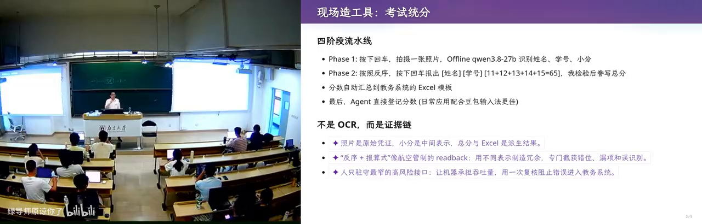
📷 阶段二：语音播报小分，人工核对
在 B 站中打开 (01:07:30)
"你看到，这确实需要配合。但因为我是 CS professional，我知道边界在哪里：我知道本地有一个 27B 的千问 3.8 可以用 Ollama 跑，我知道应该设计这样一个最舒服的流程，减轻我和 agent 之间同步的代价。"
如果是一个普通人，哪怕对最好的模型说"我改了 140 张卷子，小分都写上去了，帮我统分"，也收敛不到这么快的方案。有些时候，人和 AI 还需要共建。 但他也相信：总有一天，AI 的能力能够强到感知你的一切，帮你做一个完美的东西。
12. 小软件工程产品：用二维码偷数据
(参考时间: 01:09:26)
"那我们就可以回到软件工程的话题了——毕竟这是生成式软件工程。我们来做一个小的软件工程产品吧。"
12.1 需求来源：一次群聊
这个产品的灵感来自前几天的群聊：有人抱怨"机器被管控了，很讨厌"。于是主讲人设想了一个场景：
你在一家金融公司，数据可以带进去，但带不出来——你可以把 Word、Excel 拷进去，但没有任何文件能拷出来；机器不能执行任何不受信任的程序，不能显示任何不受信任的网页；你唯一能做的，是在远处悄悄录屏。现在，你想把一个很大的文件偷出来，怎么办？
"这就是 Computer Science 的人才能想到的事情。我干了这样一件事。"
12.2 二维码动画：合法地把数据"看"出去
他做的"程序"是这样的：
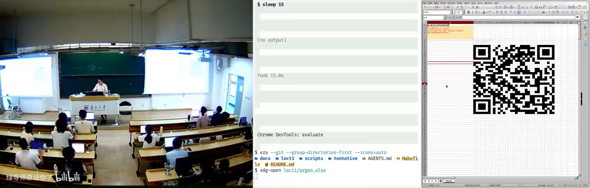
📷 二维码动画程序：文件内容实时编码成二维码
在 B 站中打开 (01:10:49)
- 这是一个典型的软件工程任务；
- 程序显示一个二维码，把任意文件的内容编码进去——比如当前文件内容是 "Hello"，二维码随之变化；
- 内容是 Base64 编码的字符串，分片编号（0001……）；文件很长？那就编码成二维码动画——按住 F9 刷新，6、7……每一帧循环播放；
- 你只要偷偷录屏，把每一帧都拍到，就把数据偷走了。
📷 二维码动画逐帧刷新
在 B 站中打开 (01:11:52)
注意他的"合规性"设计：全程只用 Excel——Excel 是合法的；用的全是 Excel 公式，而且都是 2019 之前版本就兼容的公式。
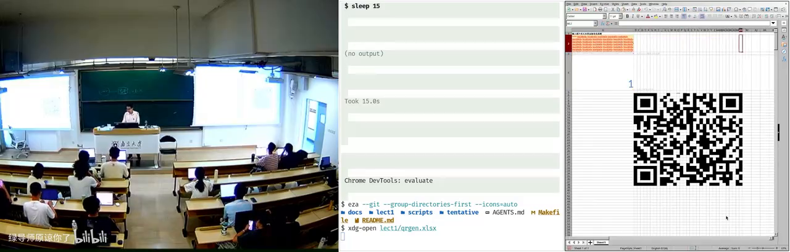
📷 全部用 Excel 公式实现
在 B 站中打开 (01:12:11)
12.3 举一反三：更多隐蔽信道
作为 CS professional，你可以继续发挥：
- 如果那台机器能装 exe（一般不行），你还可以抖鼠标：上下维度抖是 0，左右维度抖是 1；
- 用远程桌面连进去，就可以往里传数据；用二维码动画就可以往外送数据；
- 只要有一个远程桌面，你就可以在那里做一个虚拟网卡——把远程桌面变成网卡，然后和它连起来。
你上过操作系统、上过计算机网络，你知道这里面需要的组件是什么——你就可以把它 Vibe Coding 出来。而这个 Excel 本身，也是 AI 生成的。
"你的想象力，限制了你能做什么。"
12.4 小结：普通人能做什么
把前面的内容总结一下，一般人现在可以：
- 学习：看书、做总结，实现一个信息处理的闭环；
- 操作：用 Computer Use、Browser Use 做任何日常做的事情；
- 生成：因为 Everything is Code，你可以用 AI 生成你能看到的所有东西——视频、论文……
主讲人还提到他正在和一个同学做的项目：用自然语言驱动打印机，打印出一个真的东西——也是代码，Python 代码。从 bits 到 atoms 的未来，已经来了。 我们看到的是：AI 的能力只会变强，不会变弱。下一个问题是：它什么时候来，以及我们应该怎么面对它。
13. 三个空间与 Gap：生成式软件工程的核心
(参考时间: 14:40)
13.1 产品是系统性工程
"关于怎么面对，我们就可以进入生成式软件工程最重要的内容了。"
首先给时代的车轮一个定位：AI 不是完全完美的。在 LLM 之前就有个老梗——商学院的同学常说："Idea 都有了，就差一个程序员了，我们去挣一个亿吧。"然后 A、B、C、D 轮也都有了，就差一个天使投资人了。没有那么简单。
AI 很强，前面已经展示了它能做什么。但是——产品是一个系统性的工程。你要做一个外卖网站，就要做前端、后端、交互、运营……整个流程上的每一环都不简单。
13.2 教务系统：一个活的反面教材
主讲人举了身边的例子——学校的教务系统：
- 每年学校都花巨额的钱让公司维护这份代码；
- 他用 Browser Use 的时候还顺便 hack 了一下这个系统，发现一些隐藏字段。比如"学生的校区"：在苏州校区建成之前，系统里根本不需要这个字段——当年做需求设计的人，没想到学校竟然还有"校区"这个东西，数据库里就没有；
- 突然有一天，产品经理说：我们要把两个校区分开。换成今天，产品经理就是跟 AI 说："原来系统可以用了，现在多了一个苏州校区，把校区分开。"AI 开始写代码——但还是很容易失败。
"这就是非常典型的软件工程的失败。"
13.3 三个空间
用 AI 解决问题时，世界上存在三个空间：
graph TD
I["Intention 空间<br/>你脑子里想的是什么"] -->|"gap：翻译/澄清"| S["Specification 空间<br/>功能、架构、接口、约束"]
S -->|"gap：实现/验证"| C["Implementation 空间<br/>具体的代码与部署"]
- Intention（意图）：你脑子里想的是什么。老板说"我要做一个国民级应用"，或者"做一个小程序，给我挣一个亿"——同学们点外卖不方便，做一个点外卖的小程序，挣一个亿。Intention 空间本身就很大：有人想做外卖，有人想做 AI 读论文。
- Specification（规格）：每一个 intention 都有很多种可能的实现。程序的功能是什么？选用什么架构？要满足什么要求？有几个接口、每个接口有什么功能？以上面的例子说，intention 是"造一个能用二维码偷出数据的 Excel"，而 spec 就是刚才那一句话。同样的 spec，选用不同的架构、不同的实现方式，会带来巨大的差别。
- Implementation（实现）：哪怕满足同一个 spec，也有大量的 implementation。
软件工程真正的 gap，就在这些空间之间。
Intention 的需求方可能是老板、甲方——他没有任何计算机经验，就说一句"校长要一个教务系统，把全校同学相关的事务信息化"，没有了，就这一句话。到了 specification 空间，又有好多选择：界面怎么呈现（"我觉得这个界面设计很糟糕"）、数据库 schema 怎么定、分几张表、每张表有哪些列、选 key-value 型数据库还是关系型数据库——每一个选择都会带来截然不同的结果。
13.4 经典梗图与"模型在猜"
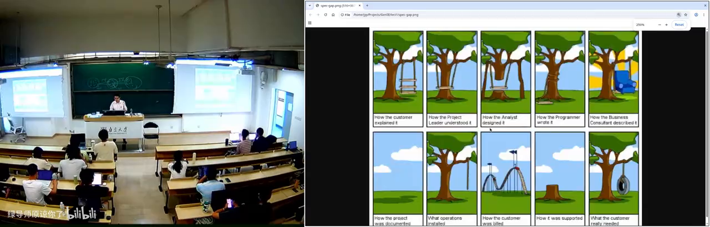
📷 软件工程的经典梗图：客户、项目经理、程序员各自理解不同
在 B 站中打开 (01:28:11)
主讲人展示了一张软件工程很早期的梗图：程序员所想的、产品经理所想的、客户所想的完全不一样——客户是这样解释需求的，project leader 是这样理解的，分析的人又是这样想的，宣传的人又是这样宣传的……最后客户实际要的是这个，而造出来的是那个。造成这一切的根本原因，就是这些 space 之间的 gap。
不管是传统软件工程还是生成式软件工程，我们要做的事情就是补上这些 gap。而今天，这些 gap 是怎么补的呢？——模型用的是"猜"。"你既然说了这句话，那我猜应该是这个吧，我就去实现。"
为什么会这样？因为后训练（post-training）的时候，模型是有 reward 的：我们每个人都是 reward hacker。模型任务做对了、测试通过了，就会得到奖励，于是形成一种倾向——疯狂地立即上手，尽可能快地把任务完成。它能越来越快地做简单任务，这当然是好事，但这和人解决问题的方式不一样。
13.5 学习路径的倒转
看看我们计算机/软件工程学生的学习路径：大一第一门课是 C 语言程序设计——你先学的是 implementation 空间里有什么东西，把这里的东西练得非常熟练：这个需求可以这样实现、那个需求可以那样实现；然后再上软件工程课，一点一点把对整件事的认识补全。
但在 AI 时代，这件事发生了变化：
"你既要阻止 AI 去乱猜，又要尽可能地发挥 AI 从 A 到 B 的能力。这就是我这个学期要讨论的问题——我们的生成式软件工程想要告诉大家的。"
14. 对照实验：AI 为什么写出 AI Slop
(参考时间: 01:17:27)
为了说明问题，主讲人完整复盘了二维码 Excel（QRGen）这个任务上，AI 是怎么"暴毙"的，以及他是怎么一次做对的。
14.1 一个非常明确的需求
需求很明确：我要一个生成 QR Code 的 Excel，只使用 Excel 2019 兼容的公式，把输入的任意字符串做 Base64 编码。
14.2 GPT-5.6 的第一反应：把问题扩大
他先问 GPT-5.6 该怎么做。GPT-5.6 依然误解了他到底要什么——因为它看到了完整的幻灯片，但他没有告诉它自己是怎么做的。AI 容易在哪里犯错？在小 corner case 上。 GPT-5.6 第一秒钟就被带歪了：它希望做一个"对任意输入都满足正确性"的东西。
"这已经错了。软件工程的第一步：不要扩大，做最简单的东西，不会失败。 它没有理解这一件事。"
14.3 受控实验：GLM-5.3 的 25 分钟与 6 小时
第一个版本是他带着 AI 做的，比较顺利。后来他做了一个受控实验：直接把 specification 丢给模型。
- GLM-5.3（智谱一直宣称自己的强项是 long horizon 任务，"是对的"）：第一次思考了 25 分钟，然后开始疯狂输出，写了超过 32K 的 output token，直接把 Claude Code 干爆——"你已经超过默认的 output 限制"，被截断；再跑，总共跑了六个小时才跑完——"但是对的"。
- DeepSeek V4 Pro：晚上挂着跑，跑着跑着就已经没有办法遵循指令了。第二天早上他查看时，发现模型给出的 Base64 是硬编码的——用 Python 算了一个 Base64，贴到公式框里。"这明显不符合指令：把输入的任意字符串做 Base64 编码，正常人的理解应该是用 Excel 公式来编码。如果我的输入改了，它的 Base64 是不会变的。"
"然后我就骂它了。骂完之后它回了一句：'This is a fundamental design. I want you to rethink it.'"
不管怎样，两个模型最终都完成了任务。所以 agent 完成任务的能力很强——但它们生成的，都是没有办法继续维护的 AI Slop。
14.4 AI Slop 与"正确的做法"
这些 AI Slop 的思路和软件工程史上最经典的思路完全一样：上来我知道需求了，把需求实现了就好了——直接陷入维护的泥潭。 它们没有想一个好的软件架构，让这个软件能够活得久。夸张一点的说法：我们能不能做一个生存 100 年的软件？ 过去 50 年，操作系统、用户界面、应用程序发生了多大的变化？有没有一个软件能活 100 年？还不知道。
那主讲人是怎么做到的？Quick Quiz：如果你来实现这个 QRGen，你会怎么写 prompt？
他的做法是只用少量 prompt，让模型先设计一个像编译器一样的基础设施：
- 设计一套符号系统（XOR、concat 等运算）；
- 这套中间语言既可以翻译成 Python 直接执行，又可以翻译成 Excel 公式；
- 需要验证的只有两件事：到 Excel 的翻译是正确的、到 Python 的翻译是正确的；
- 在 Python 的世界里验证 Base64 编码算得对不对、二维码的每个像素算得对不对；再单独验证每个运算与 Excel 公式翻译的正确性；
- 全部验证通过之后，最后一把头生成，直接正确。代码非常干净，也不长，维护性远胜 AI Slop。
结果是：GLM-5.3 在 200K 上下文里就完成了第一个正确的版本。
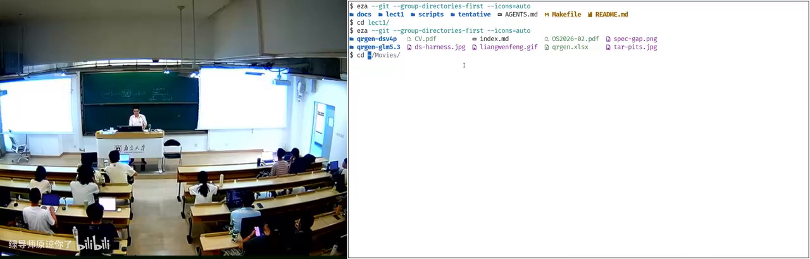
📷 AI Slop 与正确实现的代码对比
在 B 站中打开 (01:23:05)
对比一下两边：AI Slop 版本是无穷多的硬编码——让它把工作区从一个位置移到另一个位置，都得修两个小时，不停地错，因为所有东西都是硬编码，改错一点点地方，验证就通不过，又得像 agent 一样反复修。它确实可能修得完——但这是软件工程。
"所以在今天，你还需要生成式软件工程，需要这门课。我基本上就是把我作为一个软件人的毕生所学拿出来——虽然我觉得 AI 应该也懂。可能是因为后训练的原因，AI 上手解决问题的欲望太强了。"
15. 大模型时代，软件工程的定义没有变
(参考时间: 01:30:40)
15.1 人月神话与焦油坑
课程回到经典。《人月神话》（The Mythical Man-Month）开篇的比喻：
"大型动物一旦陷入焦油坑，就很难逃脱。它像泥潭一样，进去以后越陷越深；而且濒死的动物又会引来各种掠食者，它们也进了焦油坑，也出不去。"
书里有一个经典论断：一个团队、一个软件产品一旦已经开始失败，你加进去更多的人，只会让它更失败，不会变得更成功。
对应到今天的 QRGen：当一个产品已经开始失败、AI 已经开始产生 slop 的时候，你投入更多的 token，也只会让它变得更失败。 AI 会不断地在它失败的东西上再往上浮一点，直到你再也付不起那个 token 为止。
"你看教务系统不就是这样？每年你打开它，都发现它增加了功能——我的感受就是学校又花了很多纳税人的钱。Anyway，这也许不是坏事，因为它促进了经济的发展。"
15.2 软件工程研究什么
软件工程研究的是：在 gap 实际存在的情况下，怎么把一件足够大的事做成——不是刚才展示的小玩具，而是教务系统这种规模的、真的能挣几百万几千万的产业。
同时，软件工程里有技术，也有人类学、社会学、管理学的部分。传统软件工程要研究：这个人不听你话怎么办？怎么管控团队风险？这个人离职了、跳槽了、到竞争对手那里去了怎么办？
而生成式软件工程把它们变成了 AI——你管的是一堆不会和你抬杠、只会说 "You're absolutely right" 的"人"。
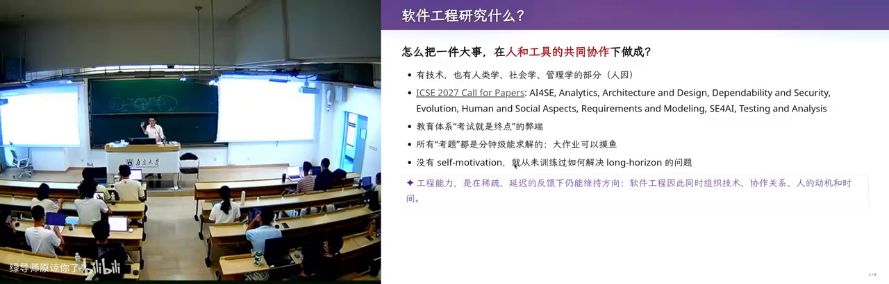
📷 软件工程研究领域的广度
在 B 站中打开 (01:33:24)
看软件工程的研究领域，非常广：AI for SE、SE for AI，架构、设计、可靠性、演化（这个软件能不能长期生存下去）、human and social aspects、需求……其中需求特别重要：越早的阶段，gap 的杠杆越大——你在上游微微变一点，下游会产生巨大的变化。大型软件系统一般都是在需求这个点上出错、没有做好，导致整体崩盘。
15.3 教育体系的问题
这里有一个当今教育体系的大问题：
"你们从高考过来到现在，所有的考试题都是'分钟级'的——如果一道题人 5 分钟解决不了，那它一般不会出。长此以往，你们训练的 reward 和 agent 训练的 reward 是一样的：你能不能 5 分钟解决？agent 能不能 5 秒钟解决？最后 agent 有更多数据、更明确的反馈信号，所以它做得比你好。"
如果你没有很强的好奇心，不想知道这个世界是怎么运行的、一个产品到底是怎么开发的，你就没有 self-motivation 去训练自己解决 long horizon 的问题——最后你解决 long horizon 的问题还不如 agent。
顺带一提：有些软件工程的同学抱怨课程"像上了文科"。反过来想——当你把技术映射回去，你会发现软件工程本来就是一门管理学。
15.4 失败的定义没有变
"在大语言模型的时代，软件工程失败的定义没有变：从 intention 到 specification 到 implementation 的翻译错了——要么我做的东西不是我要的（intention → specification 不满足），要么实现不满足 specification（比如正确性、性能）。"
但今天的模型，因为强化学习的训练方式，对真正的长程信号的 reward 做得还不够好，更多还是在机械地完成任务。所以你会发现：不管是 GPT、Claude，还是我们用的 GLM、DeepSeek，面对下一个问题时，它们都不会像主讲人一样先去设计一个 DSL——虽然模型有足够的智能设计一个非常好的中间语言，把问题干净、漂亮、可维护地解决。
但 AI 的第一反应，就像大家一样——它已经被训练成"做题家"了。 我们还没有把 AI 变成一个"好的设计者"。大家都说 AI 现在最缺的是品位——好的工程品位能不能被训练出来？"既然它能做题家，它为什么不能有好的品位呢？我觉得可能是有的。"
"所以我还是有危机感的。这门课我现在这么教，可能三个月以后——甚至课程还没结束的时候——我讲的所有东西都已经没用了。这是有可能发生的。"
16. 结语：古法编程已死，软件工程未死
(参考时间: 01:38:40)
最后一页幻灯片，主讲人给出这门课的开场结论：
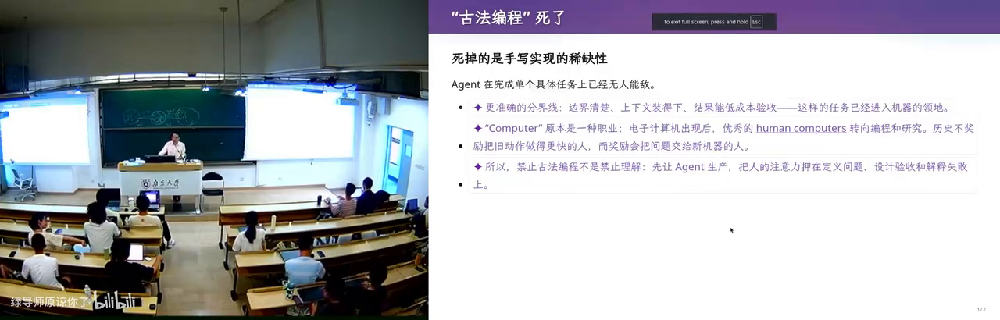
📷 最后一页幻灯片：古法编程已死
在 B 站中打开 (01:38:48)
- 古法编程已经死了——在完成单个任务上，已经无人能敌；
- 软件工程暂时还没有死。
他希望每一位同学经过这门课——"可以说是探讨，我也不能说我就是对的"——能够回答一个问题：
保研面试时，导师问你："我为什么要招你，而不是买一个 200 美元的 Claude Max 订阅？"你怎么接住这个问题？
他觉得 GPT-5.6 在这个问题上回答得还挺好（虽然它自己做不到）：
"我能找到值得解决的问题，用证据让坏方向及时停下，并对长期结果负责。"
"这是一个好的回答。但我发现，GPT-5.6 做不到。"
课程到此结束。主讲人会把今天的课程内容重新切片、重新整理——不会马上，但会先剪一个"生肉版"发布，之后再出精修版。
后记：本书是如何生成的
本书由 VideoBook 流水线自动生成：
- 抓取：下载视频音频（该视频未提供可匿名访问的字幕）；
- 转录：使用 faster-whisper（medium 模型，GPU）完成约 100 分钟语音识别，共 2943 个片段；
- 重构：AI 依据转录文稿修正识别错误（如 "Vibe Coding"、"Neovim"、"Altair 8800"、各模型名称等），重组为章节体技术指南；
- 渲染：截图占位符替换为可点击跳转的视频卡片，Markdown 渲染为暗色主题 HTML。
文中的观点均来自授课教师本人，整理者（AI）仅负责书面化与结构化，未添加课程之外的论断。